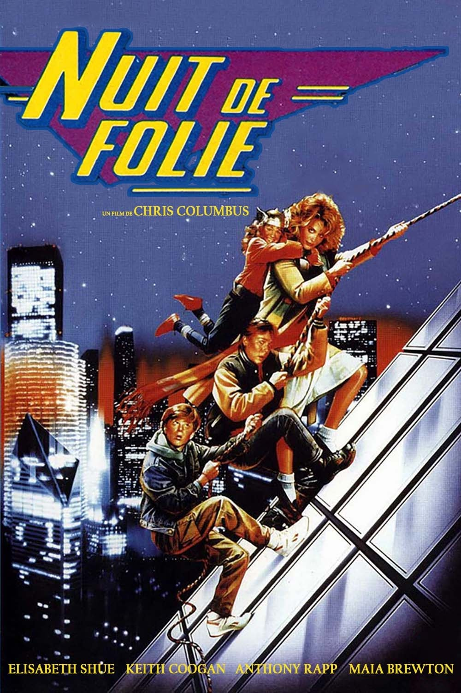
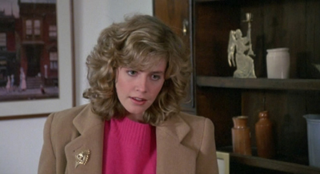
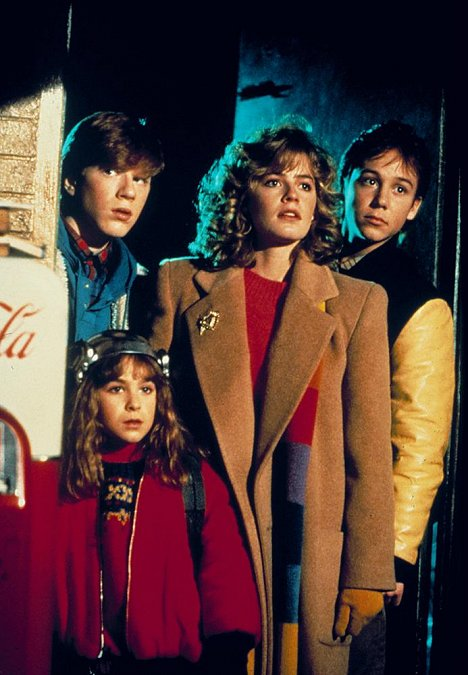

Je l'ai découvert récemment.
Pas dans l'armoire de mon grand-père. Pas sur M6 un lundi soir. Plus tard, par curiosité — parce qu'Elisabeth Shue était à l'affiche, et qu'Elisabeth Shue est une bonne raison de regarder un film.
Je connaissais Karate Kid. Leaving Las Vegas. Cocktail.
Je ne connaissais pas ça.
Adventures in Babysitting. 1987. Chris Columbus à la réalisation, avant Home Alone, avant Harry Potter. Un film qui ne ressemble à rien d'autre — pas tout à fait une comédie, pas tout à fait un film d'aventure, pas tout à fait un film d'action. Un objet hybride qui assume chaque contradiction avec une légèreté désarmante.
Et Elisabeth Shue au centre de tout — précise, drôle, crédible, irrésistible.
Ce soir, on sort la cassette.

Nuit de Folie — affiche française, 1987
Adventures in Babysitting.
1987. Réalisé par Chris Columbus. Avec Elisabeth Shue, Maia Brewton et Anthony Rapp.
Le premier long métrage de Chris Columbus — avant Home Alone, avant Mrs. Doubtfire, avant la saga Harry Potter. Un réalisateur débutant avec un script solide, une actrice principale au sommet de sa présence, et une nuit à Chicago comme terrain de jeu.
Produit par Touchstone Pictures, sorti en salles en juillet 1987. Succès modeste aux États-Unis, bien reçu par la critique, presque invisible en France.
Ce qu'on trouve à l'intérieur dépasse largement ce que le titre laisse entendre.
Pas un film pour enfants. Pas une comédie familiale au sens ordinaire. Une aventure nocturne débridée, rythmée, drôle et tendue à la fois — avec une héroïne qui tient le film sur ses épaules sans jamais avoir l'air d'y faire effort.
Adventures in Babysitting est le film que vous n'attendiez pas.
C'est précisément pour ça qu'il fonctionne.
1987.
Hollywood est en pleine période de comédie d'aventure adolescente. Ferris Bueller's Day Off a redéfini le genre un an plus tôt. The Breakfast Club, Sixteen Candles, Pretty in Pink — John Hughes domine le paysage du teen movie américain. Tout le monde cherche la prochaine formule.
Chris Columbus arrive avec quelque chose de légèrement différent.
Columbus n'est pas encore réalisateur — il est scénariste. Gremlins, The Goonies. Il connaît la mécanique du film d'aventure familial de l'intérieur. Quand il passe derrière la caméra pour la première fois, il applique ce qu'il a appris — la tension, le rythme, l'escalade progressive des situations.
Adventures in Babysitting prend une prémisse simple — une baby-sitter qui emmène les enfants dont elle a la charge dans une aventure nocturne à Chicago — et l'étire jusqu'aux limites du raisonnable avec une inventivité constante.
Elisabeth Shue est le choix parfait. Révélée par The Karate Kid en 1984, elle cherche à s'imposer dans un registre plus large. Chris Taylor lui offre exactement ça — un personnage qui doit tout porter, qui improvise en permanence, qui ne perd jamais le fil même quand tout s'effondre autour d'elle.
Chicago comme décor — ses rues, ses clubs de blues, ses parkings, ses gangs. Une ville de nuit qui fonctionne comme un labyrinthe dont il faut s'échapper avant l'aube.

Elisabeth Shue — Adventures in Babysitting, 1987
Chris Parker a un plan pour ce soir.
Un rendez-vous romantique. Une soirée tranquille. Rien de compliqué.
Le plan tombe à l'eau. Et à la place, elle se retrouve à garder trois enfants pour la nuit — un garçon de huit ans, sa grande sœur adolescente, et le meilleur ami de la sœur qui est secrètement amoureux de Chris.
Puis un appel téléphonique change tout.
Une amie bloquée à Chicago, seule dans une gare routière, qui a besoin d'aide. Chris décide d'aller la chercher. Avec les trois enfants. Dans la voiture familiale. La nuit.
Ce qui s'ensuit est une série d'incidents qui s'enchaînent avec une logique implacable — chaque solution crée un nouveau problème, chaque détour mène vers quelque chose de plus inattendu que le précédent.
Des voleurs de voiture. Un club de blues. Des membres de gang. Un architecte en crise. Des faussaires.
Le film ne se répète jamais. Il escalade. Et au centre de tout — Chris Parker qui improvise, qui gère, qui ne lâche rien.
Elisabeth Shue qui prouve en une nuit ce qu'elle est capable de faire.
Ce film aurait pu être une comédie anodine sur une baby-sitter maladroite.
Il ne l'est pas.
Ce qui distingue Adventures in Babysitting c'est sa construction — une mécanique d'horlogerie qui emprunte autant au film d'aventure qu'à la comédie de situation. Chaque scène est un engrenage. Chaque incident appelle le suivant avec une précision qui trahit la formation de scénariste de Columbus.
Il y a dans ce film quelque chose qu'on ne sait plus vraiment faire aujourd'hui — une légèreté qui n'exclut pas la tension. Les enfants sont en danger réel, les situations sont genuinement tendues, et pourtant le film ne perd jamais son énergie, son humour, son plaisir de raconter.
Et Elisabeth Shue est la raison pour laquelle tout ça fonctionne.
Chris Parker n'est pas une héroïne au sens classique. Elle ne sait pas se battre, elle n'a pas de plan, elle n'a pas de ressources particulières. Elle a juste la présence d'esprit de ne jamais céder à la panique — et une façon d'occuper chaque scène qui rend tout crédible même quand la situation devient absurde.
C'est un registre difficile. La légèreté sans la frivolité. L'humour sans la désinvolture. Elisabeth Shue le maîtrise avec une aisance qui explique pourquoi Hollywood allait lui confier des rôles de plus en plus exigeants dans les années suivantes.
Adventures in Babysitting est un film parfaitement calibré.
Et ça, c'est plus rare qu'il n'y paraît.

Chicago by night — la bande au complet
Adventures in Babysitting n'a pas raté son public.
Il a juste été éclipsé.
1987 est une année chargée pour le teen movie américain. Ferris Bueller est encore dans toutes les têtes. La Fièvre du Samedi Soir Bis, Dirty Dancing, Three Men and a Baby — le marché de la comédie familiale est saturé. Adventures in Babysitting arrive, fait des entrées correctes, reçoit de bonnes critiques, et disparaît dans le bruit ambiant.
Le titre n'aide pas. Adventures in Babysitting sonne comme un film pour enfants en bas âge — quelque chose qu'on met dans le lecteur VHS pour occuper les petits un mercredi après-midi. La jaquette ne corrige pas cette impression. Le public potentiel passe à côté.
En France, le film n'a pratiquement pas existé. Pas de sortie en salles significative, pas de présence télévisuelle marquante, pas de titre français mémorable.
Et Chris Columbus — qui n'était pas encore une signature commerciale en 1987 — ne pouvait pas porter le film sur son nom.
C'est une catégorie d'oubli particulière. Pas le film qui a échoué. Le film qui a réussi modestement et qu'on n'a jamais pensé à aller chercher parce que rien ne signalait qu'il valait le détour.
Il valait le détour.
Parce qu'Elisabeth Shue mérite d'être vue dans ce rôle.
Dans la mémoire collective, on retient Leaving Las Vegas — la performance qui lui a valu une nomination aux Oscars en 1996. On retient Karate Kid. On retient Cocktail.
Adventures in Babysitting est rarement dans la conversation.
C'est une erreur. Parce que ce film montre quelque chose que les autres ne montrent pas — Elisabeth Shue dans un registre purement comique et physique, portant un film entier sur ses épaules avec une aisance qui n'a pas l'air d'un effort.
Et parce que le film lui-même a une qualité qu'on ne produit plus vraiment — cette capacité à être plusieurs choses à la fois sans trahir aucune d'entre elles. Drôle et tendu. Léger et rythmé. Pour les enfants et pour les adultes. Sans jamais forcer, sans jamais expliquer, sans jamais se prendre au sérieux.
En 2026, ce type de film est devenu presque introuvable. Le cinéma familial s'est segmenté, calibré, optimisé. Adventures in Babysitting appartient à une époque où on faisait encore confiance au public pour suivre un film qui ne rentrait dans aucune case.
Je l'ai découvert récemment. Par curiosité, pour Elisabeth Shue.
Je suis resté pour le film.
Adventures in Babysitting n'est pas un film oublié au sens dramatique du terme.
Il est juste passé entre les mailles.
Un film de 1987 qui n'avait pas le bon titre, pas la bonne jaquette, pas la bonne visibilité en France — et qui pourtant contient quelque chose de précieux. Une nuit à Chicago, une héroïne qui improvise, une mécanique de comédie d'aventure parfaitement huilée.
Et Elisabeth Shue — avant Leaving Las Vegas, avant les grandes reconnaissances — qui prouve ici qu'elle avait tout depuis le début.
Je l'ai découvert récemment. Sans attente particulière. En cherchant autre chose.
C'est souvent comme ça que les meilleurs films arrivent.
La cassette est dans le lecteur. On rembobine.
Titre original
Adventures in Babysitting
Pays
États-Unis
Genre
Comédie / Aventure
Durée
102 min
Producteur
Touchstone Pictures
Avec aussi
Maia Brewton · Anthony Rapp
Fil conducteur
Hors-piste — Saison 2
Note
Premier film de Chris Columbus
SOMEDAY — S2 EP. 04